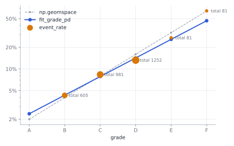
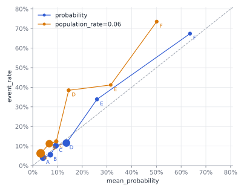
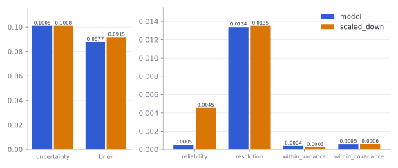
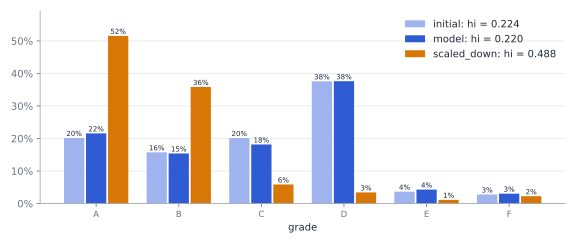
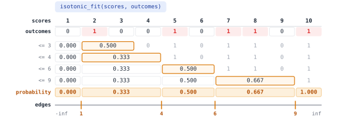

校准#
如果 PD 模型给出的概率与之后观测到的违约率相符，就称模型是校准的。校准与排序是两个不同的问题：一个模型可以把申请人排得很好，却仍然对整个资产组合预测了过低的违约率。 kivi.calibration 针对开发数据的抽样方式校正概率，构建主标尺，汇总其各个等级并进行检验，用 Platt 缩放或保序回归把评分映射为概率，还能把 PD 调整到长期平均违约率。
校准位于 模型表现 之后（后者衡量排序能力），位于 LGD 与 EAD （估计同一批贷款的另外两个风险参数）和 信贷策略 （在校准后的 PD 上设定截断点）之前。 prior_correction() 和 corrected_intercept() 校正抽样的影响； master_scale() 、 fit_grade_pd() 和 assign_grades() 构建并应用主标尺； calibration_table() 、 binomial_test() 、 jeffreys_test() 、 hosmer_lemeshow() 、 spiegelhalter_test() 、 brier_decomposition() 、 herfindahl_index() 和 concentration_test() 统计并检验各等级； backtest_table() 回测 LGD 等连续型估计值； platt_fit() 、 platt_predict() 、 isotonic_fit() 和 isotonic_predict() 重新校准评分； central_tendency_shift() 和 quasi_moment_fit() 则把 PD 校准到中心趋势。 模型验证 汇集了欧洲央行在验证报告中要求的各项检验。
过采样校正#
开发模型时，常常对坏样本做过采样，例如使好坏样本数量相等。这样模型预测的是该样本上的概率，而不是资产组合上的概率。设开发样本的事件率为 \(\bar y\) ，资产组合的事件率为 \(\tau\) ，King 和 Zeng 的先验校正把每个概率的几率乘以
如果模型在坏样本占 50% 的样本上开发，而资产组合的违约率为 2%，那么概率 0.5 会变为 0.02：
>>> from kivi.calibration import corrected_intercept, prior_correction
>>> prior_correction([0.5, 0.2, 0.05], sample_rate=0.5, population_rate=0.02).round(4)
array([0.02 , 0.0051, 0.0011])
校正不改变概率的排序。对逻辑回归而言，它只是把截距平移 \(\ln \omega\) ，因此系数以及 评分卡 中每单位 WOE 对应的分值都保持不变：
>>> print(f"{corrected_intercept(-0.3, sample_rate=0.5, population_rate=0.02):.4f}")
-4.1918
主标尺的等级#
主标尺把 PD 的取值范围划分为一组固定的等级，使不同模型给出的评级具有统一的含义。每个等级有一个 PD，等级之间的界限决定预测 PD 落入哪个等级。下面的示例使用 评分卡 中的评分卡在开发样本和监控样本上给出的 PD：
>>> import numpy as np
>>> import pandas as pd
>>> from kivi.datasets import load_bank
>>> from kivi.woe import woe_table, woe_transform
>>> data = load_bank()
>>> development, monitoring = data.iloc[:3000], data.iloc[3000:]
>>> age_edges = np.array([-np.inf, 25, 35, 45, 55, 65, np.inf])
>>> def to_groups(frame):
... groups = frame[["poutcome", "contact", "housing"]].copy()
... groups["age"] = pd.cut(frame["age"], age_edges)
... return groups
>>> dev_groups = to_groups(development)
>>> target = development["target"]
>>> tables = {column: woe_table(dev_groups[column], target) for column in dev_groups}
>>> coefficients = pd.Series(
... {"poutcome": 0.899, "contact": 0.658, "housing": 0.691, "age": 0.714}
... )
>>> def predict(frame):
... groups = to_groups(frame)
... woe = pd.DataFrame(
... {column: woe_transform(groups[column], tables[column]) for column in groups}
... )
... return 1 / (1 + np.exp(2.028 - woe @ coefficients))
>>> dev_prob, probability = predict(development), predict(monitoring)
构建标尺#
主标尺的 PD 通常逐级按固定倍数增长。 master_scale() 接收每个等级的 PD，并加上各等级的界限。这里的 PD 是从 2% 到 64% 共六个等级的几何网格，每个等级的 PD 是前一个等级的两倍：
>>> from kivi.calibration import assign_grades, fit_grade_pd, master_scale
>>> scale = master_scale(np.geomspace(0.02, 0.64, 6), labels=list("ABCDEF"))
>>> scale.round(4)
lower probability upper
grade
A 0.0000 0.02 0.0283
B 0.0283 0.04 0.0566
C 0.0566 0.08 0.1131
D 0.1131 0.16 0.2263
E 0.2263 0.32 0.4525
F 0.4525 0.64 1.0000
每个界限是其两侧 PD 的几何平均数，即对数尺度上的中点，因此 PD 归入按比值更接近的那个等级。 boundary="arithmetic" 改用算术平均数，与 kivi 0.2 版本相同。算术平均数高于几何平均数，因此每个等级向上延伸得比向下更远。这时等级 A 包含直到 3%（而不是 2.83%）的 PD。以 Series 给出的 PD 以其索引作为等级标签：
>>> arithmetic = master_scale(scale["probability"], boundary="arithmetic")
>>> arithmetic["upper"].round(4)
grade
A 0.03
B 0.06
C 0.12
D 0.24
E 0.48
F 1.00
Name: upper, dtype: float64
使用算术界限时，一个等级中的大多数 PD 高于该等级的 PD，因此校准良好的模型的观测违约率往往高于等级的 PD。
划分等级#
assign_grades() 为每个 PD 指定界限包含它的那个等级。恰好落在界限上的 PD 归入较低的等级，因为 pandas.cut 的区间是左开右闭的；PD 为 0 时归入第一个等级。等级是标签的有序分类变量，因此 calibration_table() 比较每个等级的观测违约率与平均预测 PD 时，按标尺的顺序列出各等级。连接（join）标尺即可加入每个等级的 PD：
>>> from kivi.calibration import calibration_table
>>> grades = assign_grades(probability, scale)
>>> scale_table = calibration_table(grades, monitoring["target"], probability)
>>> scale_table.join(scale["probability"]).round(3)
total event event_rate mean_probability probability
bin
B 328 13 0.040 0.042 0.04
C 459 36 0.078 0.080 0.08
D 632 72 0.114 0.136 0.16
E 56 21 0.375 0.267 0.32
F 46 31 0.674 0.636 0.64
模型没有给任何客户低于 2.83% 的 PD，因此等级 A 为空， calibration_table 将其略去。
拟合各等级的 PD#
各等级的 PD 也可以来自其中观测到的违约率。 fit_grade_pd() 把违约率的对数拟合为等级编号的直线，使用以各等级观测数为权重的最小二乘法，因此拟合的 PD 同样逐级按固定倍数增长。没有违约的等级以半次违约参与拟合，没有观测的等级不参与拟合，但仍会得到 PD。按标尺的等级统计开发样本：
>>> dev_counts = calibration_table(assign_grades(dev_prob, scale), target, dev_prob)
>>> dev_counts["event_rate"].round(3)
bin
B 0.043
C 0.084
D 0.133
E 0.272
F 0.642
Name: event_rate, dtype: float64
等级按其在输入中的位置编号，因此拟合之前要把计数重新索引到标尺的所有等级。这样空的等级 A 会以计数 0 保留其位置：
>>> dev_counts = dev_counts.reindex(scale.index, fill_value=0)
>>> fitted_pd = fit_grade_pd(dev_counts["event"], dev_counts["total"])
>>> fitted = master_scale(fitted_pd)
>>> fitted.round(4)
lower probability upper
grade
A 0.0000 0.0238 0.0321
B 0.0321 0.0432 0.0582
C 0.0582 0.0784 0.1056
D 0.1056 0.1423 0.1917
E 0.1917 0.2582 0.3477
F 0.3477 0.4683 1.0000
拟合的 PD 逐级增长为 1.81 倍，与等级 B 到 E 的违约率吻合得很好。等级 F 的违约率为 64%，远高于这条直线：它只有 81 个客户，因此在拟合中权重很小。下面的检验会说明这是否要紧。

开发样本各等级的实际违约率、 fit_grade_pd 拟合的 PD 以及标尺的几何网格，纵轴为对数刻度。点越大，客户越多；等级 F 位于拟合线之上。#
按界限给出的等级#
标尺也可以只由其界限给出，例如来自现有的评级体系。用 pandas.cut 在这些界限处切分 PD，其区间与 assign_grades() 一样是左开右闭的； include_lowest=True 让恰好为 0 的 PD 留在第一个等级。本页其余部分使用这些等级：
>>> pd_edges = [0, 0.05, 0.08, 0.12, 0.2, 0.4, 1]
>>> grades = pd.cut(probability, pd_edges, labels=list("ABCDEF"), include_lowest=True)
>>> table = calibration_table(grades, monitoring["target"], probability)
>>> table.round(3)
total event event_rate mean_probability
bin
A 328 13 0.040 0.042
B 234 13 0.056 0.071
C 276 28 0.101 0.093
D 572 66 0.115 0.136
E 65 22 0.338 0.260
F 46 31 0.674 0.636
calibration_table() 接受任意分组，例如分数段或 PD 的十分位组。它的计数方式与 woe_table() 相同：分类型分组保持类别顺序，没有观测值的等级会被略去。
逐个等级检验#
每个等级单独检验，原假设是其 PD 没有偏低。两种检验都是单侧的：p 值较小，说明该等级的违约数多于其 PD 的预测。
二项检验 把一个等级中的 \(N\) 个债务人视为相互独立，每人以概率 \(p\) 违约。其 p 值是至少出现观测到的 \(d\) 次违约的概率，即 \(P(D \ge d)\) 。
Jeffreys 检验 以 Jeffreys 先验 \(\mathrm{Beta}(1/2, 1/2)\) 作为违约率的先验分布。其 p 值是违约率不超过 \(p\) 的后验概率，即 \(\mathrm{Beta}(d + 1/2, N - d + 1/2)\) 在 \(p\) 处的分布函数值。欧洲央行在 PD 模型验证中要求使用这一检验。
>>> from kivi.calibration import binomial_test, jeffreys_test
>>> def grade_tests(table):
... return table.assign(
... binomial=binomial_test(table["event"], table["total"], table["mean_probability"]),
... jeffreys=jeffreys_test(table["event"], table["total"], table["mean_probability"]),
... )
>>> grade_tests(table)[["event_rate", "mean_probability", "binomial", "jeffreys"]].round(3)
event_rate mean_probability binomial jeffreys
bin
A 0.040 0.042 0.609 0.554
B 0.056 0.071 0.858 0.825
C 0.101 0.093 0.352 0.315
D 0.115 0.136 0.937 0.928
E 0.338 0.260 0.098 0.077
F 0.674 0.636 0.356 0.300
在常用的 5% 水平下，没有等级被拒绝。为了观察检验的效果，把 PD 按资产组合违约率为 6%（而非开发样本的 11.6%）的情形调低。监控样本的违约率仍与开发样本相当，因此这些 PD 现在偏低：
>>> low = prior_correction(probability, sample_rate=0.116, population_rate=0.06)
>>> low_grades = pd.cut(low, pd_edges, labels=list("ABCDEF"), include_lowest=True)
>>> low_table = calibration_table(low_grades, monitoring["target"], low)
>>> grade_tests(low_table)[["event_rate", "mean_probability", "binomial", "jeffreys"]].round(3)
event_rate mean_probability binomial jeffreys
bin
A 0.062 0.032 0.000 0.000
B 0.112 0.067 0.000 0.000
C 0.124 0.095 0.224 0.177
D 0.385 0.145 0.000 0.000
E 0.412 0.315 0.269 0.193
F 0.735 0.501 0.005 0.003

原始 PD 的各评级贴近对角线，而下调后 PD 的各评级位于对角线上方：违约多于预测。点越大，客户越多。#
对相同的计数，Jeffreys 检验的 p 值总是略低于二项检验，因此 Jeffreys 检验稍微更容易拒绝。两种检验都假定违约相互独立；经济下行期违约同涨同落，会使它们的拒绝频率高于名义水平。
对于主标尺，还要用每个等级自身的 PD（即该等级的每个客户被赋予的 PD）对其进行检验。在监控样本上，上面拟合的标尺在等级 B 到 E 上通过了检验，但等级 F 的违约数多于其 47% 的 PD 所预测的数量：
>>> fitted_table = calibration_table(
... assign_grades(probability, fitted), monitoring["target"], probability
... ).join(fitted["probability"])
>>> fitted_table.assign(
... binomial=binomial_test(
... fitted_table["event"], fitted_table["total"], fitted_table["probability"]
... ),
... jeffreys=jeffreys_test(
... fitted_table["event"], fitted_table["total"], fitted_table["probability"]
... ),
... )[["total", "event", "event_rate", "probability", "binomial", "jeffreys"]].round(3)
total event event_rate probability binomial jeffreys
bin
B 328 13 0.040 0.043 0.664 0.611
C 456 36 0.079 0.078 0.509 0.474
D 620 70 0.113 0.142 0.986 0.984
E 70 23 0.329 0.258 0.115 0.092
F 47 31 0.660 0.468 0.006 0.004
这条直线低估了风险最高的等级。可以改用等级 F 自身的违约率作为其 PD，或把它并入等级 E，然后重新检验标尺。
一次检验所有等级#
Hosmer-Lemeshow 检验把全部 \(g\) 个分组中观测违约数与预测违约数之差的平方累加起来：
在拟合模型所用的样本上，把排序后的 PD 分成约十个大小相近的组，并将 \(H\) 与自由度为 \(g - 2\) 的卡方分布比较，这也是默认设置：
>>> from kivi.binning import bin_edges
>>> from kivi.calibration import hosmer_lemeshow
>>> deciles = pd.cut(dev_prob, bin_edges(dev_prob, bins=10))
>>> dev_table = calibration_table(deciles, development["target"], dev_prob)
>>> statistic, pvalue = hosmer_lemeshow(
... dev_table["event"], dev_table["total"], dev_table["mean_probability"]
... )
>>> print(f"H = {statistic:.2f}, p = {pvalue:.3f}")
H = 3.42, p = 0.905
如果 PD 不是在被检验的样本上拟合的（例如监控样本的各等级），自由度不会减少，因此传入 ddof=0 ：
>>> statistic, pvalue = hosmer_lemeshow(
... table["event"], table["total"], table["mean_probability"], ddof=0
... )
>>> print(f"H = {statistic:.2f}, p = {pvalue:.3f}")
H = 5.60, p = 0.470
>>> statistic, pvalue = hosmer_lemeshow(
... low_table["event"], low_table["total"], low_table["mean_probability"], ddof=0
... )
>>> print(f"H = {statistic:.1f}, p = {pvalue:.1e}")
H = 74.1, p = 6.0e-14
Hosmer-Lemeshow 统计量取决于分组方式。Spiegelhalter 检验不需要分组：它把这些概率的 Brier 分数与假如它们就是真实概率时应有的分数相比较，并把差值标准化：
spiegelhalter_test() 返回 \(z\) 及其双侧 p 值。监控样本的 PD 通过检验，调低后的 PD 则明显不通过：
>>> from kivi.calibration import spiegelhalter_test
>>> for pds in (probability, low):
... statistic, pvalue = spiegelhalter_test(pds, monitoring["target"])
... print(f"z = {statistic:.2f}, p = {pvalue:.3f}")
z = -0.95, p = 0.343
z = 7.38, p = 0.000
正的 \(z\) 表示概率的 Brier 分数高于这些概率若为真实概率时应有的分数，负的 \(z\) 表示低于该分数；两者都否定这些概率。对于低于 1/2 的概率（PD 通常如此），正的 \(z\) 表示违约多于 PD 的预测，负的表示违约少于预测：调低后的 PD 几乎全部低于 1/2，因此偏低。该检验对概率接近 0 或 1 的观测赋予最大的权重，因此少数几个过于自信的错误就可能决定结果。
分解 Brier 分数#
brier_score() 的 Brier 分数把校准和区分能力混在一起。 brier_decomposition() 按分组（例如标尺的等级）把它分解。设第 \(k\) 组包含 \(N\) 个观测中的 \(n_k\) 个，平均概率为 \(\bar f_k\) ，事件率为 \(\bar o_k\) ，总体事件率为 \(\bar o\) ，则
各组校准得越好，可靠性 REL 越低；各组事件率差别越大，分辨力 RES 越高。不确定性 \(\mathrm{UNC} = \bar o (1 - \bar o)\) 只取决于结果。组内方差 WBV 和组内协方差 WBC 考虑组内取值不同的概率；同一组的所有观测概率相同时二者为 0。调低后的 PD 得分比模型 PD 差，是因为其可靠性是模型 PD 的九倍，而分辨力和不确定性几乎相同：
>>> from kivi.calibration import brier_decomposition
>>> pd.DataFrame({
... "model": brier_decomposition(grades, monitoring["target"], probability),
... "scaled_down": brier_decomposition(low_grades, monitoring["target"], low),
... }).round(4)
model scaled_down
statistic
brier 0.0877 0.0915
reliability 0.0005 0.0045
resolution 0.0134 0.0135
uncertainty 0.1008 0.1008
within_variance 0.0004 0.0003
within_covariance 0.0006 0.0006

调低后的 PD 与模型的 PD 有相同的不确定性和几乎相同的分辨力，但可靠性是后者的九倍，这使它们的 Brier 分数更高。#
在主标尺上，同一等级的每个客户都取该等级的 PD，因此组内项消失，只剩 Murphy 的三项。在拟合标尺的等级上比较模型 PD 与该标尺的 PD：
>>> fitted_grades = assign_grades(probability, fitted)
>>> grade_pd = fitted_grades.map(fitted["probability"]).astype(float)
>>> pd.DataFrame({
... "model": brier_decomposition(fitted_grades, monitoring["target"], probability),
... "grade_pd": brier_decomposition(fitted_grades, monitoring["target"], grade_pd),
... }).round(4)
model grade_pd
statistic
brier 0.0877 0.0896
reliability 0.0005 0.0017
resolution 0.0129 0.0129
uncertainty 0.1008 0.1008
within_variance 0.0004 0.0000
within_covariance 0.0011 0.0000
分辨力相同，因为它只取决于等级和结果。等级 PD 失去了组内协方差（它奖励模型 PD 在等级内随违约率上升），可靠性约为模型 PD 的三倍，主要来自等级 F：其 PD 为 47%，低于 66% 的违约率。
等级的集中度#
如果大多数债务人都落在少数几个等级，主标尺对风险的区分能力就较差。赫芬达尔-赫希曼指数是各等级占比的平方和： \(k\) 个等级人数相同时为 \(1/k\) ，所有人都在同一等级时为 1。设置 normalize=True 后，取值范围改为 0 到 1：
>>> from kivi.calibration import herfindahl_index
>>> print(f"{herfindahl_index(table['total']):.3f}")
0.247
>>> print(f"{herfindahl_index(table['total'], normalize=True):.3f}")
0.097
calibration_table() 会略去空等级。如需把空等级计算在内，请传入标尺上每个等级的计数，例如 grades.value_counts(sort=False) 。
欧洲央行则用 HI 衡量集中度，它是对 \(K\) 个等级的指数做对数变换， \(\mathrm{HI} = 1 + \ln \mathrm{HHI} / \ln K\) ，各等级人数相同时同样为 0，只有一个等级有人时为 1。 concentration_test() 同时计算它和各等级占比 \(R_i\) 的变异系数，并检验变异系数自模型初始验证以来是否上升：
把开发样本当作初始验证，并统计两个样本的每个等级，无论是否为空。监控样本各等级的集中度与开发时相同，而调低后的 PD 挤进了低等级，HI 增加了一倍多：
>>> from kivi.calibration import concentration_test
>>> dev_grades = pd.cut(dev_prob, pd_edges, labels=list("ABCDEF"), include_lowest=True)
>>> initial = dev_grades.value_counts(sort=False)
>>> pd.DataFrame({
... "model": concentration_test(grades.value_counts(sort=False), initial_counts=initial),
... "scaled_down": concentration_test(
... low_grades.value_counts(sort=False), initial_counts=initial
... ),
... }).round(4)
model scaled_down
statistic
hi 0.2202 0.4876
cv 0.6954 1.1814
initial_hi 0.2244 0.2244
initial_cv 0.7036 0.7036
statistic -0.0264 0.6569
p_value 0.5105 0.2556

监控样本各等级的分布与开发样本（此处作为初始验证）相近。调低后的 PD 集中在 A、B 两个等级，使 HI 增加了一倍多。#
然而检验并没有拒绝调低后的等级：它的方差取决于等级数而非客户数，因此六个等级的标尺使检验的功效很低。除了 p 值，也要看 HI 及其变化。只知道初始验证时的变异系数时，把它作为 initial_cv 传入。欧洲央行还要求给出敞口的 HI，但不做检验；只传入每个等级的敞口即可，这里用账户余额代替敞口：
>>> exposure = monitoring["balance"].clip(lower=0).groupby(grades, observed=False).sum()
>>> concentration_test(exposure)[["hi", "cv", "p_value"]].round(4)
statistic
hi 0.2306
cv 0.7152
p_value NaN
dtype: float64
回测连续型估计值#
LGD 和 CCF 模型估计的是金额比例而不是概率，因此校准表的计数并不适用。 backtest_table() 按欧洲央行要求的配对观测单样本 t 检验，把每个观测的实际值 \(r_i\) 与其估计值 \(e_i\) 相比较。对一组中的 \(N\) 个观测，设差值为 \(d_i = r_i - e_i\) ，则
p 值为自由度为 \(N - 1\) 的学生 t 分布的上尾概率。该检验是单侧的：p 值较小说明该组的估计值偏低。这里用七个已结案的违约检验 LGD 模型的两个债项等级：
>>> from kivi.calibration import backtest_table
>>> lgd_grades = ["F1", "F1", "F1", "F2", "F2", "F2", "F2"]
>>> realized = [0.05, 0.35, 0.20, 0.55, 0.20, 0.90, 0.75]
>>> estimated = [0.15, 0.15, 0.15, 0.45, 0.45, 0.45, 0.45]
>>> backtest_table(lgd_grades, realized, estimated).round(4)
total estimated realized difference variance statistic p_value
bin
F1 3 0.15 0.2 0.05 0.0225 0.5774 0.3110
F2 4 0.45 0.6 0.15 0.0917 0.9909 0.1974
在等级 F1 中，差值 -0.1、0.2 和 0.05 的均值为 0.05，方差为 0.0225，因此 \(T = \sqrt{3} \cdot 0.05 / 0.15 = 0.577\) 。两个等级的实际值都高于估计值，但七个违约太少，两者都不能拒绝。对整个资产组合检验时，为每个观测传入同一个分组，例如 ["all"] * 7 。实际值可以在 [0, 1] 之外，例如扣除清收成本后的 LGD，或回收额超过敞口时的 LGD。 模型验证 回测了一个模拟的 LGD 资产组合，也包括欧洲央行的十二个 LGD 分段。
校准评分#
能把申请人排好序的评分不一定是概率，模型的 PD 也可能需要在近期数据上重新校准。 kivi.calibration 拟合两种常用的从评分到概率的映射。与 bin_edges() 和 cut() 一样，每种映射都成对出现：拟合函数在校准样本上拟合一次并返回普通的数值，预测函数再把它们应用到之后任何样本的评分上。
Platt 缩放#
Platt 缩放以评分 \(s\) 为自变量，对目标拟合逻辑回归：
如果评分本身就是某个模型的对数几率，这就是 Cox 的逻辑再校准：斜率为 1、截距为 0 说明模型在该样本上是校准的。以上文按 6% 违约率调低的 PD 为例。在开发样本上，拟合得到的斜率仍为 1，截距则提高约 0.72，正是该校正所用优势比的对数：
>>> from kivi.calibration import platt_fit, platt_predict
>>> def log_odds(p):
... return np.log(p / (1 - p))
>>> dev_low = prior_correction(dev_prob, sample_rate=0.116, population_rate=0.06)
>>> slope, intercept = platt_fit(log_odds(dev_low), target)
>>> print(f"slope = {slope:.4f}, intercept = {intercept:.4f}")
slope = 0.9996, intercept = 0.7192
把斜率和截距应用到监控样本中偏低的 PD 上。再校准后的各等级，其计数和事件率又与原始 PD 的等级相同：
>>> recalibrated = platt_predict(log_odds(low), slope, intercept)
>>> recal_grades = pd.cut(recalibrated, pd_edges, labels=list("ABCDEF"), include_lowest=True)
>>> calibration_table(recal_grades, monitoring["target"], recalibrated).round(3)
total event event_rate mean_probability
bin
A 328 13 0.040 0.042
B 234 13 0.056 0.071
C 276 28 0.101 0.093
D 572 66 0.115 0.136
E 65 22 0.338 0.260
F 46 31 0.674 0.636
评分不必是对数几率。Platt 缩放适用于任何评分；风险越高评分越低的评分（例如评分卡分值）会得到负的斜率。当评分把两类完全分开时，使似然最大的斜率为无穷大， platt_fit() 会引发 kivi.selection.SeparationError 。
保序回归#
保序回归只假定事件率随评分上升。相邻违序合并算法不断合并相邻的评分段，直到各段的事件率递增，每段取其事件率。 isotonic_fit() 返回分段边界（与 bin_edges() 一样从 -inf 到 inf ）以及每个分段的概率：
>>> from kivi.calibration import isotonic_fit, isotonic_predict
>>> scores = list(range(1, 11))
>>> outcomes = [0, 1, 0, 0, 1, 0, 1, 1, 0, 1]
>>> edges, probability = isotonic_fit(scores, outcomes)
>>> edges
array([-inf, 1., 4., 6., 9., inf])
>>> probability.round(3)
array([0. , 0.333, 0.5 , 0.667, 1. ])
算法从最低评分到最高评分依次处理。每个评分先自成一段；只要某段的事件率高于其后一段，就把两段合并。这里评分 3 的结果 0 跟在评分 2 的事件之后，所以评分 2 和 3 合并为 0.5；评分 4 的 0 又使它们再次合并为 1/3。每个边界都是其分段中的最高评分：

对十个评分执行相邻违序合并。每一行显示处理完左侧所标评分及之前所有评分后的分段；带边框的分段刚刚合并，灰色的结果尚未处理。最后一行是拟合出的概率。#
在开发样本的 PD 上，拟合得到 16 个分段：
>>> edges, probability = isotonic_fit(dev_low, target)
>>> len(probability)
16
>>> probability[:4].round(4)
array([0.0397, 0.0459, 0.069 , 0.0805])
与 pandas.cut 一样，各分段为右闭区间，因此也可以用作等级。 isotonic_predict() 给监控样本的每个 PD 赋予其所在分段的概率，超出开发样本范围的评分取最低或最高分段的概率。落在两个分段的观测评分之间的评分取上方的分段；若 increasing=False （例如评分卡分值），这就是风险较低的分段：
>>> iso = isotonic_predict(low, edges, probability)
>>> iso_table = calibration_table(pd.cut(low, edges), monitoring["target"], iso)
>>> statistic, pvalue = hosmer_lemeshow(
... iso_table["event"], iso_table["total"], iso_table["mean_probability"], ddof=0
... )
>>> print(f"H = {statistic:.2f}, p = {pvalue:.3f}")
H = 13.94, p = 0.530
>>> int(iso_table["total"].min())
4
阶梯函数紧贴开发样本，因此有些分段很小：最小的分段只有监控样本中的四位客户。请在大样本上拟合保序回归，并像上面那样在另一个样本上检查其分段。没有事件的分段概率为 0，因此在不允许 PD 为零的场合，请为概率设定下限。
校准到中心趋势#
IRB 模型的 PD 必须与长期平均违约率相符，即在包含好年份和坏年份的期间上各一年违约率的平均，由 Vintage 与滚动率分析 中的 default_rate_table() 计算（EBA/GL/2017/16，第 5.3 节）。用近几年数据开发的模型预测的是这几年的违约率，所以要在与当前组合可比的校准样本上，把它的 PD 调整到长期水平，即中心趋势。按新样本的事件率重新校准是同一件事，只是目标不同。下面两种方法都出自 Tasche，都保持债务人的顺序，符合指引对校准分段内校准的要求（第 99 段），也都在加保守性边际和施加 PD 下限之前进行（第 89 段）。
平移 log odds#
给每个 PD 的 log odds 加上同一个数 \(\Delta\) ，模型的形状不变，平均 PD 随之移动。 central_tendency_shift() 求出使校准样本的平均 PD 等于中心趋势 \(\tau\) 的 \(\Delta\) ：
银行模型在开发样本上的平均 PD 为 11.6%，即该样本的事件率。假如长期平均违约率为 8%，平移量为：
>>> from kivi.calibration import central_tendency_shift
>>> shift = central_tendency_shift(dev_prob, central_tendency=0.08)
>>> print(f"{shift:.4f}")
-0.4547
>>> long_run_pd = dev_prob / (dev_prob + (1 - dev_prob) * np.exp(-shift))
>>> print(f"{long_run_pd.mean():.4f}")
0.0800
函数返回的是平移量而不是 PD，因为平移量只在校准样本上拟合一次，之后应用于每一个新债务人：上面的公式把任何 PD 变为校准后的值，logistic 模型的截距变为 intercept + shift ， 评分卡 中评分卡的分数减少 factor * shift 。PD 为 0 和 1 的保持不变。
第一节的先验修正则是按两个事件率之比缩放 odds。它假设当前组合的评分服从模型在新事件率下隐含的分布；对从总体中重新抽取的样本是这样，对手头的校准样本却不一定。在开发样本上，它达不到目标值：
>>> print(f"{prior_correction(dev_prob, sample_rate=0.116, population_rate=0.08).mean():.4f}")
0.0829
Tasche 把这种平移称为缩放似然比：各等级的似然比，即某一等级存活的 odds 相对于整个组合存活的 odds，乘以同一个常数。在他对评级机构数据的比较中，这种做法的校准效果优于其他方法，也优于常见的做法——把所有 PD 乘以目标值与其平均值之比，那样结果可能超过 1，还会把开发期的违约率带进预测。EBA 的指引把这种“把近期样本的 PD 调整到校准分段长期平均”的做法列为可接受的校准理念之一。
Quasi moment matching（准矩匹配）#
平移保持 PD 曲线的斜率不变。当 PD 来自少数几个等级、违约太少而无法拟合曲线，或者斜率本身也需要改变时，quasi moment matching 按两个目标拟合评分 \(s\) 的 logistic 曲线 \(1 / (1 + \exp(-(a s + b)))\) ：平均 PD 等于中心趋势，曲线隐含的准确性比率等于目标准确性比率。曲线对每个评分隐含了比例为 \(p\) 的事件和 \(1 - p\) 的非事件，它们的 Gini 系数（并列按一半计）就是 gini() 的准确性比率。与 PD 的方差不同，准确性比率不依赖违约者所占的比例，所以开发样本的准确性比率可以沿用到违约率不同的组合。
quasi_moment_fit() 返回斜率和截距，由 platt_predict() 应用。这里的评分是上文主标尺的等级序号，从最好的等级起计数；目标是这些等级在开发样本上的准确性比率，它低于 PD 本身的准确性比率，因为同一等级内的客户被视为并列：
>>> from kivi.calibration import quasi_moment_fit
>>> from kivi.metrics import gini
>>> number = assign_grades(dev_prob, scale).cat.codes + 1
>>> accuracy_ratio = gini(number, target)
>>> print(f"{accuracy_ratio:.4f}")
0.3470
>>> slope, intercept = quasi_moment_fit(
... number, central_tendency=0.08, accuracy_ratio=accuracy_ratio
... )
>>> print(f"slope = {slope:.4f}, intercept = {intercept:.4f}")
slope = 0.7407, intercept = -5.1186
>>> curve_pd = pd.Series(
... platt_predict(np.arange(1, 7), slope, intercept), index=scale.index, name="probability"
... )
>>> curve_pd.round(4)
grade
A 0.0124
B 0.0257
C 0.0523
D 0.1038
E 0.1955
F 0.3376
Name: probability, dtype: float64
>>> print(f"{platt_predict(number, slope, intercept).mean():.4f}")
0.0800
各等级的 PD 逐级大约翻一倍，与标尺的网格相同，它们在开发样本上的平均值就是 8% 的中心趋势。这里各等级等距；间距不同的评分（例如模型的 log odds）得到的曲线对该评分是 logistic 的。
曲线对传入的评分是 logistic 的。对评级等级，Tasche 还拟合一个稳健版本，对等级中点分布的正态分位数是 logistic 的；中点分布是从最差的等级起计算的、不高于某一等级的债务人份额与低于该等级的份额的平均，已知违约时取存活者，否则取整个组合。先计算这个分位数，例如用 statistics.NormalDist().inv_cdf ，取负号使其随风险上升，再作为评分传入。在 2009 年标普的公司评级上，这样得到的结果在 17 个等级中有 15 个与 Tasche 公布的平滑 PD 在印出的精度上完全一致。
平均 PD 固定时，准确性比率随斜率上升，上限是最陡曲线的准确性比率：最危险的评分 PD 为 1，其余为 0。并列使这个上限低于 1，目标达到或超过它时会报错，并给出这个上限。用开发样本的准确性比率作目标，是假设模型的区分能力可以沿用：在 Tasche 对 26 年评级机构数据的回测中，保持准确性比率不变是他比较的四种方法里最差的，而评级的准确性比率这些年来与违约率反向变动。平滑也不能替代数据：指引不允许用平滑的违约率或连续 PD 来弥补数据不足或排序能力弱的缺陷（第 96 段），所以要按上文的方法，逐等级用违约率检验校准后的 PD。
样本权重#
保留全部坏样本、只保留部分好样本的开发样本，可以用每个观测抽样比例的倒数作为权重，加权还原到资产组合。 calibration_table() 、 platt_fit() 和 isotonic_fit() 通过 weights 接受这样的权重：计数变为权重之和，整数权重与重复相应行的结果相同。二项检验、Jeffreys 检验和 Hosmer-Lemeshow 检验需要整数的观测数和事件数，因此请在不加权的表上进行这些检验。
spiegelhalter_test() 、 brier_decomposition() 和 backtest_table() 也接受 weights ，并视为频数权重：整数权重与重复相应行的结果相同，检验把总权重视为观测数，因此用抽样率的倒数作权重会使 p 值过小。 concentration_test() 接受的是各等级的计数或敞口，而不是权重。
central_tendency_shift() 和 quasi_moment_fit() 也接受频数权重，例如每个等级只出现一次时各等级的债务人数：整数权重与重复行得到相同的结果。中心趋势是按债务人的平均，不要按敞口加权（巴塞尔 CRE36.78）。